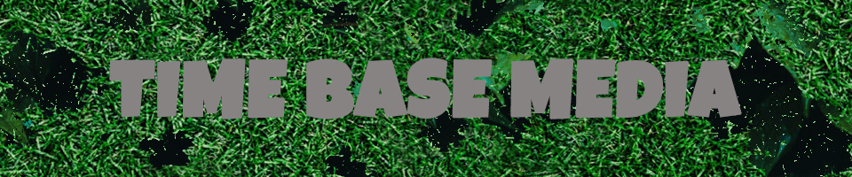

As you know, 2020 has been a year of taking precautions with keeping yourself clean in hopes of not catching the Corona Virus. So for my animation, I wanted to have the Halloween theme in therewith also the incorporation of keeping your hands free from germs, dead or alive. I felt that I had more freedom and technical skills with illustrator so I created my and objects there and then brought them into animator afterward. Amongst the three projects, I would say that this one took the most time, animation is no joke.